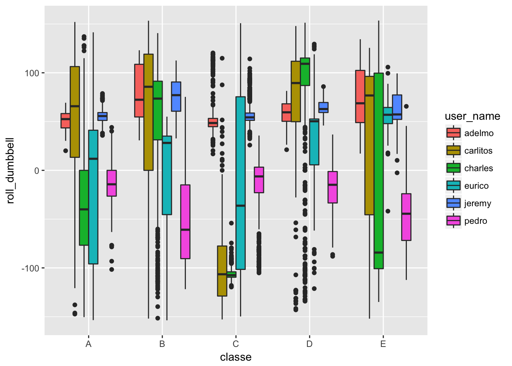
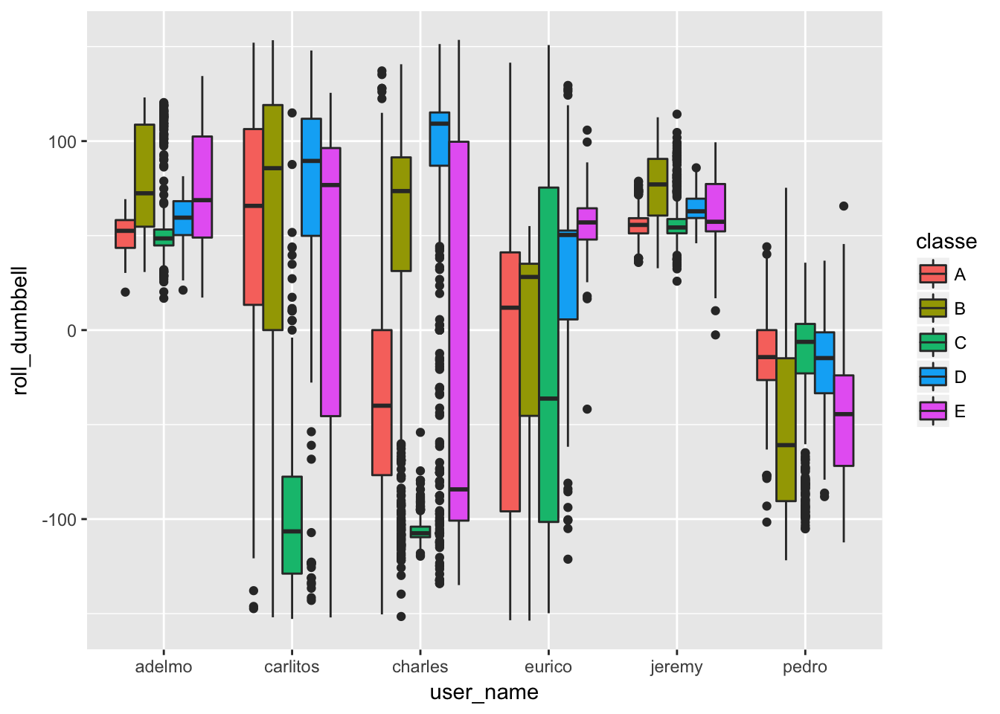

The task was to build a model to distingusih 5 different types of lift of a dumbell for 6 different participants. The initial data set had over 19,000 rows of 160 variables. Analysis of the data suggested that a small amount of rows should be removed and once removed many of the columns could also be removed. Further choices based on an understanding of the data set were made to reduce the number of variables to 19. Visualizations did not provide any insight into further variable reduction so the data set of 19,216 rows and 19 columns was submitted to a Random Forest and Gradient Boost training. In each case 70% of the data was used for training and 30% for testing. The Gradient Boost method proved superior and provided an overall accuracy of 95.9%.
First of all the training and test data sets were downloaded. Using the summary command to examine the columns of the training set, there are a lot of columns that seem to have NA values. These appear to correlate to the new window attribute. The related academic paper ( http://groupware.les.inf.puc-rio.br/public/papers/2013.Velloso.QAR-WLE.pdf ) suggests that summary statistics for each lift were gathered but only represented once in the dataset.
Therefore it looks like there are possibly 2 models
According to the paper the summary statistics gathered (mean, variance, standard deviation, max, min, amplitude, kurtosis and skewness) * 3 Euler angles (roll, pitch, yaw) * 4 sensors (belt, arm, dumbell, forearm)
Therefore there are 96 possibly independent measurements in summary for each of the lifts.
However, when looking at the test set there are 20 observations and in each case the ‘new window’ variable is set to ‘no’. Therefore it seems appropriate that the model should be constructed from just the data where new window = ‘no’. Additionally each test observation is from a different window (num_window) so there is no value in trying to construct a model that factors in temporal issues for an individual lift.
So the first part of feature selection will be to focus on just the records where new_window = ‘no’ and to remove the columns where there are just NA or blank values for those records. A check shows that once the new_window = ‘yes’ records are removed then each column is either fully blank/NA or fully populated.
train <- read.csv('https://d396qusza40orc.cloudfront.net/predmachlearn/pml-training.csv')
trainRaw <- subset(train, train$new_window == 'no')
naCount <-sapply(trainRaw, function(y) sum(length(which(is.na(y) | y==""))))
numTrain <- dim(trainRaw)[1]
noNas <- names(which(naCount == 0))
allNas <- names(which(naCount == numTrain))
length(allNas) + length(noNas) == dim(trainRaw)[2]## [1] TRUEtrainRaw <- trainRaw[,-which(names(trainRaw) %in% allNas)]We now have 60 columns down from the original 160. There are other columns we should also remove as we can judge they are not relevant to the model:
We retain user_name as a potentially significant predictor as it also occurs in the test set.
ignoreCols <- c('X', 'raw_timestamp_part_1', 'cvtd_timestamp', 'new_window', 'num_window')
trainRaw <- trainRaw[,-which(names(trainRaw) %in% ignoreCols)]This still leaves us with a lot of features. The data appears to have individual x,y,z readings for each of the sensors and then some summary statistics. First I will focus on just the summary statistics as this will remove 36 further variables. The paper http://physics.rutgers.edu/~aatish/teach/srr/workshop3.pdf describes how the raw X,Y,Z values can be summarised into pitch, roll and yaw so it seems to be a reasonable thing to do:
trainSum <- trainRaw[, -grep('_[x|y|z]', colnames(trainRaw))]There are now 19 variables including the output variable classe and the user_name variable.
Some plots of the variables vs class and user does not seem to show any significant pattern of correlation between the individual variables and the class. For example the below plot examines the roll_dumbell variable compared to classe for each user.
ggplot(aes(y = roll_dumbbell, x = classe, fill = user_name), data = trainSum) + geom_boxplot()
And separately compared to user for each classe. This plot indicates that the user_name variable certainly influences the other variables.
ggplot(aes(y = roll_dumbbell, x = user_name, fill = classe), data = trainSum) + geom_boxplot()
First I want to try a random forest approach so I need to segment the data into factors or else the algorithm will not perform well. I will apply a cut function to each of the numeric columns to split into 5 factors based on the range of value.
mysplit <- function(x, n) { minx <- min(x); maxx <- max(x); delta = (maxx - minx)/n; c(-Inf, minx + 1:(n-1) * delta, Inf) }
trainCut <- as.data.frame(lapply(trainSum[,2:18], function(x) {cut(x, breaks=mysplit(x,5))}))
trainCut$classe <- trainSum$classe
trainCut$user_name <- trainSum$user_nameNext separate the training data into a 70% training set and a 30% test / cross validation set.
set.seed(123)
trainPop <- trainCut
# 70% test / 30% test
sampleSize <- floor(0.70 * nrow(trainPop))
trainInd <- sample(seq_len(nrow(trainPop)), size = sampleSize)
forTrain <- trainPop[trainInd, ]
forTest <- trainPop[-trainInd, ]Invoke the caret train method for random forest. Note that this takes over 20 minutes on an 8 core system (using the doParallel library). Therefore I save the model and check for its existence before running. That way I only need to run once.
if (file.exists('rf1.RData') == TRUE) {
load('rf1.RData')
} else {
library(doParallel)
cl <- makeCluster(detectCores())
registerDoParallel(cl)
Sys.time()
rf1 <- train(classe ~ ., data=forTrain, method="rf")
save(rf1, file='rf1.RData')
Sys.time()
stopCluster(cl)
}We can then evaluate performance against the 30% test set. Note the test set is already transformed into factors as the sampling happened after the various transformations. If we have to test on brand new data then the appropriate transformations would need to be done.
pred <- predict(rf1, newdata=forTest)The confusion matrix suggests an accuracy of 86.9% with a confidence interval of (86.04% to 87.8%). The sensitivity and specificity for detecting good lifts (class A) is particularly good at 95.9% and 98.5% respectively.
confusionMatrix(pred, forTest$classe)## Confusion Matrix and Statistics
##
## Reference
## Prediction A B C D E
## A 1579 35 11 7 7
## B 23 900 62 22 34
## C 30 83 860 66 54
## D 8 27 72 768 61
## E 7 42 45 57 905
##
## Overall Statistics
##
## Accuracy : 0.8694
## 95% CI : (0.8604, 0.878)
## No Information Rate : 0.2857
## P-Value [Acc > NIR] : < 2e-16
##
## Kappa : 0.8348
## Mcnemar's Test P-Value : 0.07519
##
## Statistics by Class:
##
## Class: A Class: B Class: C Class: D Class: E
## Sensitivity 0.9587 0.8280 0.8190 0.8348 0.8530
## Specificity 0.9854 0.9699 0.9506 0.9653 0.9679
## Pos Pred Value 0.9634 0.8646 0.7868 0.8205 0.8570
## Neg Pred Value 0.9835 0.9604 0.9593 0.9685 0.9669
## Prevalence 0.2857 0.1886 0.1821 0.1596 0.1840
## Detection Rate 0.2739 0.1561 0.1492 0.1332 0.1570
## Detection Prevalence 0.2843 0.1806 0.1896 0.1624 0.1832
## Balanced Accuracy 0.9721 0.8989 0.8848 0.9001 0.9104The next model I want to try is Graident Boost. For this I can use the raw values in the data set - I do not need to convert them to factors.
set.seed(123)
trainPop <- trainRaw
sampleSize <- floor(0.70 * nrow(trainPop))
trainInd <- sample(seq_len(nrow(trainPop)), size = sampleSize)
forTrain <- trainPop[trainInd, ]
forTest <- trainPop[-trainInd, ]
if (file.exists('gbm1.RData') == TRUE) {
load('gbm1.RData')
} else {
library(doParallel)
cl <- makeCluster(detectCores())
registerDoParallel(cl)
Sys.time()
control <- trainControl(method="repeatedcv", number=10, repeats=3)
gbm1 <- train(classe ~ ., data=forTrain, method="gbm", trControl=control, verbose=FALSE)
save(gbm1, file='gbm1.RData')
Sys.time()
stopCluster(cl)
}
pred <- predict(gbm1, newdata=forTest)The confusion matrix for the Gradient Boost is below. It shows a superior accuracy of 95.9% and sensitivity and specificity for class A of 98.7% and 99.2%. This is clearly superior to the Random Forest model described above.
confusionMatrix(pred, forTest$classe)## Confusion Matrix and Statistics
##
## Reference
## Prediction A B C D E
## A 1627 31 0 0 2
## B 14 1019 44 6 13
## C 3 36 981 28 7
## D 3 0 21 877 14
## E 0 1 4 9 1025
##
## Overall Statistics
##
## Accuracy : 0.9591
## 95% CI : (0.9536, 0.964)
## No Information Rate : 0.2857
## P-Value [Acc > NIR] : < 2.2e-16
##
## Kappa : 0.9482
## Mcnemar's Test P-Value : 0.0001572
##
## Statistics by Class:
##
## Class: A Class: B Class: C Class: D Class: E
## Sensitivity 0.9879 0.9374 0.9343 0.9533 0.9661
## Specificity 0.9920 0.9835 0.9843 0.9922 0.9970
## Pos Pred Value 0.9801 0.9297 0.9299 0.9585 0.9865
## Neg Pred Value 0.9951 0.9854 0.9854 0.9911 0.9924
## Prevalence 0.2857 0.1886 0.1821 0.1596 0.1840
## Detection Rate 0.2822 0.1768 0.1702 0.1521 0.1778
## Detection Prevalence 0.2879 0.1901 0.1830 0.1587 0.1802
## Balanced Accuracy 0.9899 0.9605 0.9593 0.9727 0.9815Finally we can run the superior model against the test samples provided in the exercise.
testSample <- read.csv('https://d396qusza40orc.cloudfront.net/predmachlearn/pml-testing.csv')
predict(gbm1, newdata=testSample)## [1] B A B A A E D B A A B C B A E E A B B B
## Levels: A B C D E